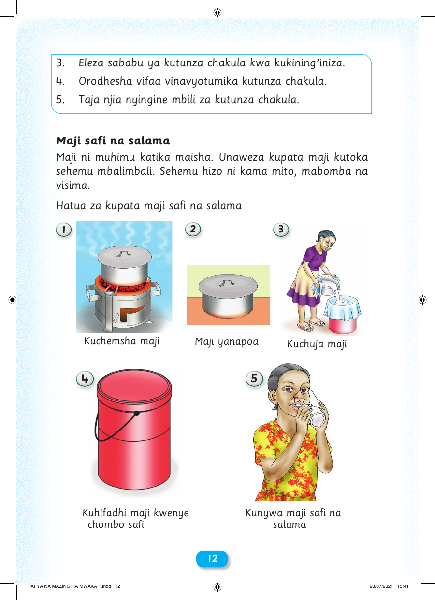

3. Eleza sababu ya kutunza chakula kwa kukining’iniza. 4. Orodhesha vifaa vinavyotumika kutunza chakula. 5. Taja njia nyingine mbili za kutunza chakula. Maji safi na salama Maji ni muhimu katika maisha. Unaweza kupata maji kutoka sehemu mbalimbali. Sehemu hizo ni kama mito, mabomba na visima. Hatua za kupata maji safi na salama 1 2 3 Kuchemsha maji Maji yanapoa Kuchuja maji 4 5 Kuhifadhi maji kwenye Kunywa maji safi na chombo safi salama 12 AFYA NA MAZINGIRA MWAKA 1.indd 12 23/07/2021 15:41